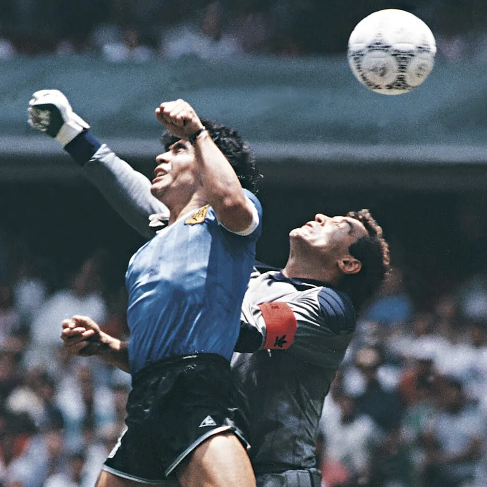
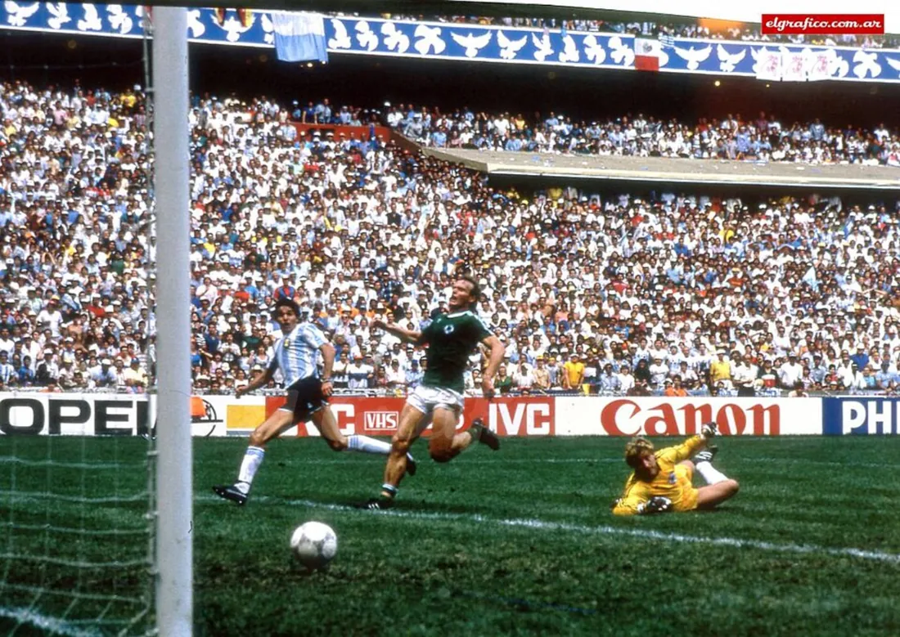
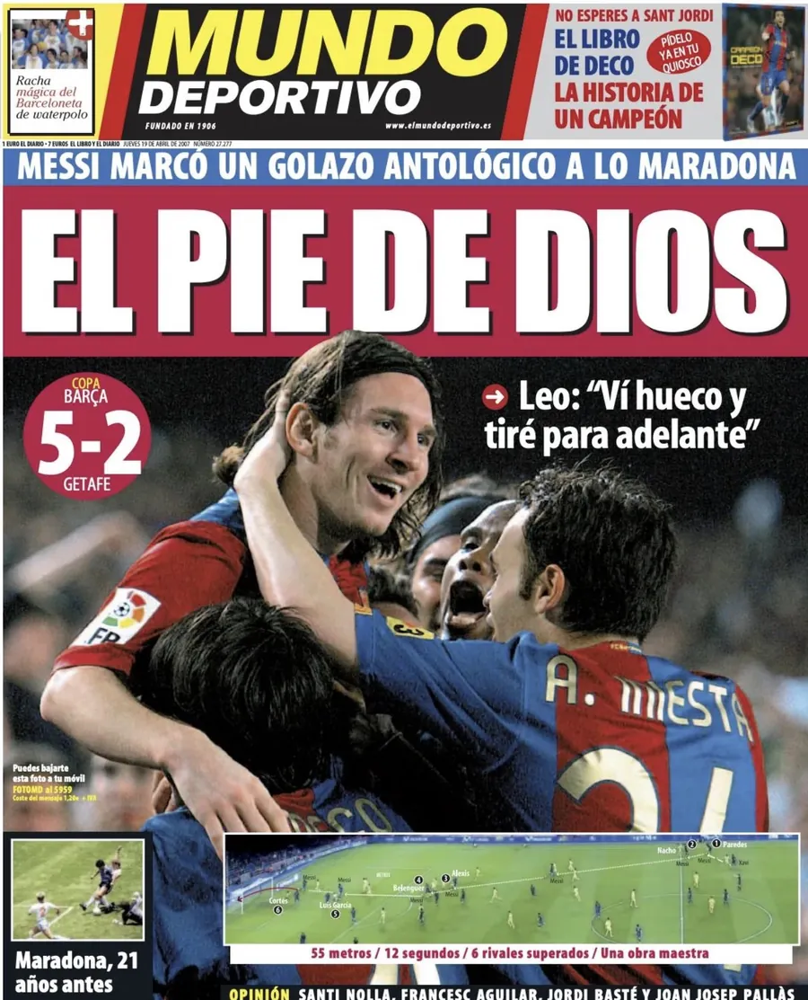
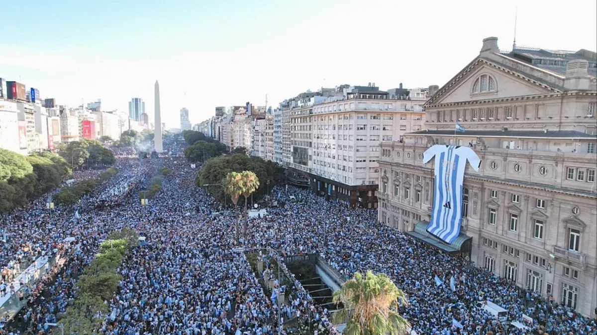
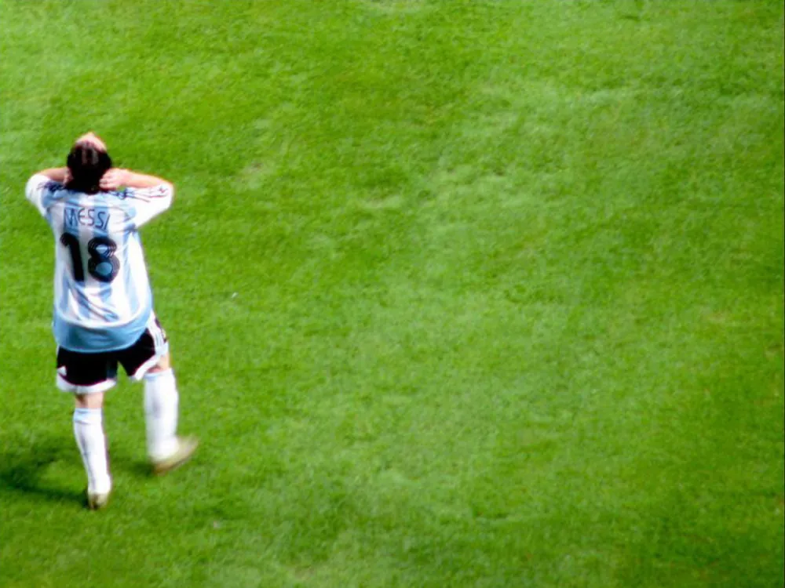
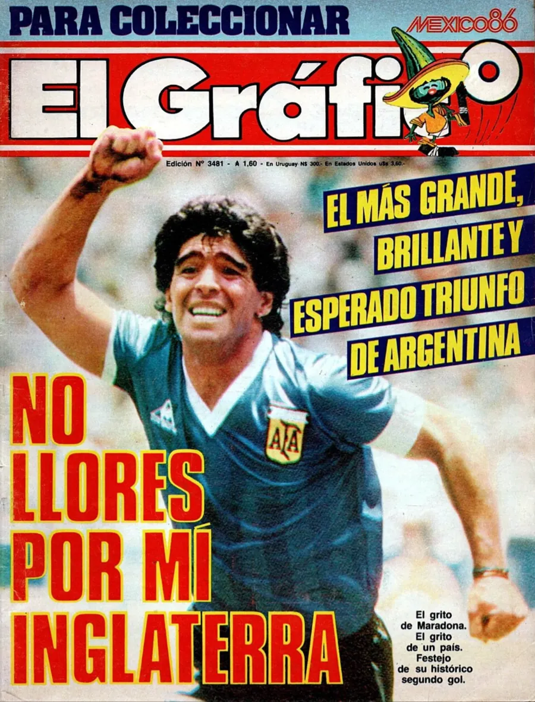
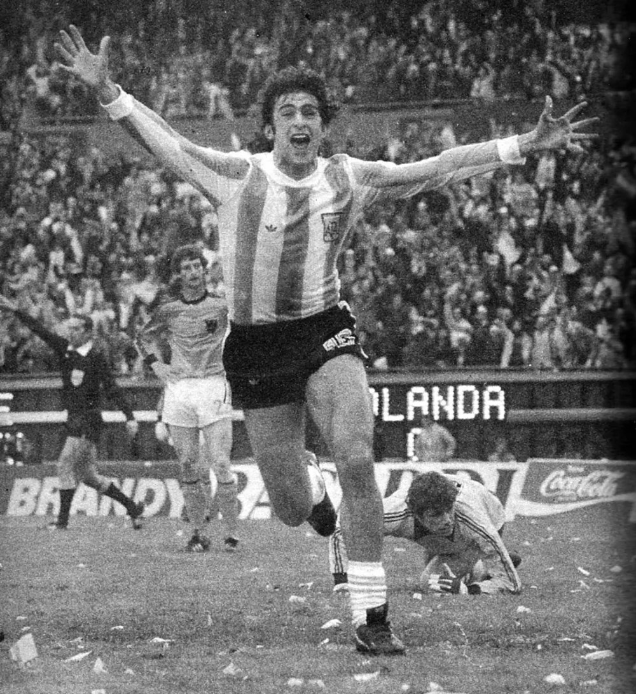
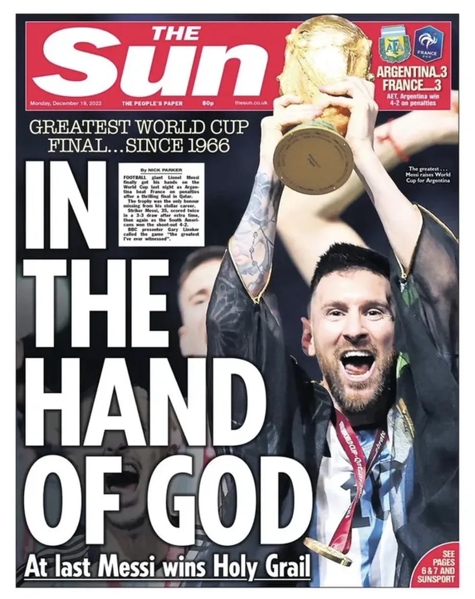
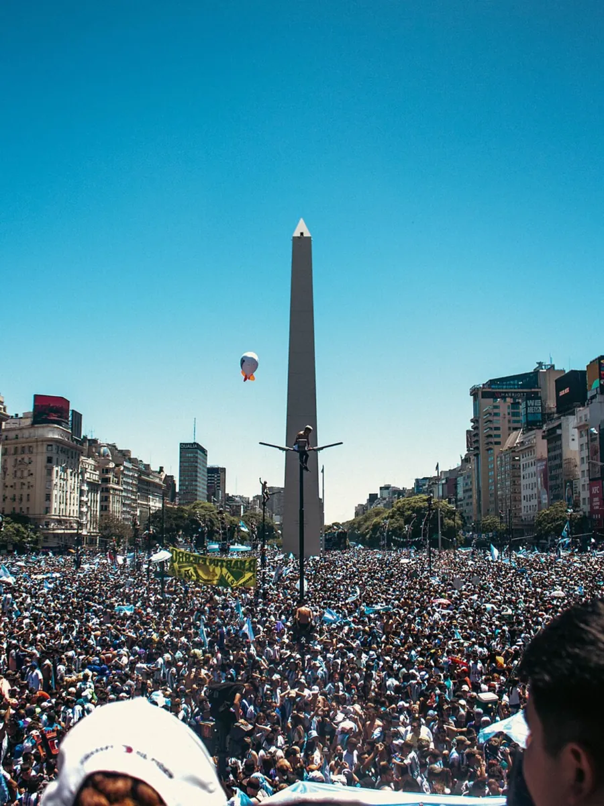

Unes: El Gráfico n° 3065, 1978 – domaine public · El Gráfico n° 3482, 1986 – domaine public · La Nación, 19/12/2022 – © La Nación / Getty Images
Édition ArgentineDisponible immédiatement
Les 9 disques de l'Argentine
Neuf buts, neuf histoires. Touchez un disque pour lire comment c'était, avec les mots des journaux et des commentateurs de ce jour-là.
🎧 Touchez un disque et écoutez le butDisponible immédiatement : expédié tout de suite. Livraison incluse dans le monde entier.

Feuilletez les 9 disques
🎧 Touchez un disque. Réécoutez ce but. Revivez l’émotion.


Disque 1 sur 9
Maradona 51'
La mano de Dios
Le souvenirUn poing plus haut que le ciel de midi. Le ballon est entré, et tout un pays avec lui.
Mexico, quart de finale contre l'Angleterre, quatre ans après la guerre des Malouines. Pour les Argentins, ce n'est pas un match comme les autres.
À la 51e minute, un dégagement raté de Steve Hodge envoie le ballon vers le gardien Peter Shilton. Maradona, vingt centimètres plus petit, saute avec lui et touche le ballon du poing gauche. L'arbitre tunisien Ali Bin Nasser valide : 1-0.
Les Anglais protestent, mais le but est accordé. Quatre minutes plus tard, Maradona marquera aussi le but du siècle.
Anecdote Après le match, il expliqua que le but était venu « un peu avec la tête de Maradona et un peu avec la main de Dieu ». Depuis, ce but porte ce nom. — Diego Armando Maradona, conferencia de prensa, 22/06/1986


Disque 2 sur 9
Burruchaga 84'
Mundial 1986
Le souvenirQuarante mètres en solitaire, avec trente millions de cœurs qui couraient derrière lui.
En finale, l'Argentine mène 2-0 grâce à José Luis Brown et Jorge Valdano. La RFA ne lâche rien : Rummenigge et Völler égalisent en six minutes.
À la 84e, Maradona, marqué de près tout le match, trouve l'espace pour une seule passe. Elle suffit : Jorge Burruchaga file vers le but, poursuivi par un défenseur allemand, et bat Harald Schumacher à la sortie. 3-2.
Six minutes plus tard, l'Argentine est championne du monde pour la deuxième fois.
Anecdote Des années plus tard, il a raconté ses 40 mètres de course vers Schumacher : « Nunca pensé otra cosa que en que fuera gol » (« Je ne pensais qu'au but »). — Jorge Burruchaga, Análisis Digital, 29/06/2021
«El grito de un país. ¡Campeones del mundo!»


Disque 3 sur 9
Messi 28'
Getafe 2007
Le souvenirVingt et un ans plus tard, la même course : comme si le football avait rembobiné la cassette pour ceux qui étaient nés trop tard.
Messi a 19 ans. Il reçoit le ballon sur la droite, encore dans son camp, et s'élance.
Il élimine un à un les adversaires qui se présentent, entre dans la surface, dribble aussi le gardien et marque dans un angle fermé, le défenseur arrivant trop tard en glissade.
Au stade comme devant la télé, tout le monde pensa la même chose : c'était le but de Maradona contre l'Angleterre, presque identique, 21 ans plus tard.
Anecdote Après le match, il l'a résumé en six mots : « Vi hueco y tiré para adelante » (« J'ai vu un trou et j'y suis allé »). 55 mètres, 12 secondes, 6 adversaires éliminés. — Lionel Messi, Mundo Deportivo, 19/04/2007
«El pie de Dios»
«Y ahora lo llaman «Messidona»»
«Encara Messi!»


Disque 4 sur 9
Montiel 4-2
Champions 2022
Le souvenirTrente-six ans d'attente sur onze mètres. Un tir, et tout un pays s'est remis à respirer.
L'une des plus belles finales de l'histoire. L'Argentine mène 2-0, Mbappé égalise avec deux buts en deux minutes. En prolongation, Messi marque le 3-2, Mbappé complète son triplé : 3-3.
Aux tirs au but, Emiliano Martínez arrête la frappe de Coman et Tchouaméni tire à côté. Le quatrième tir argentin revient à Gonzalo Montiel : s'il marque, c'est fini.
Il avait décidé de frapper fort au centre. Il voit Lloris bouger trop tôt et change de côté au dernier moment. But : l'Argentine est championne du monde.
Anecdote En prolongation, sa main avait offert à Mbappé le penalty du 3-3. Avant les tirs au but, Scaloni lui a demandé deux fois s'il se sentait prêt : « le respondí que estaba seguro » (« je lui ai répondu que j'étais sûr »). Puis il a marqué le tir décisif. — Gonzalo Montiel, AFA Estudio, 2023
«Gloria eterna»
«¡Somos campeones del mundo!»
«Le cambié de palo.»

Disque 5 sur 9
Messi 61'
Copa América 2007
Le souvenirTout le monde attendait la frappe. Il a dessiné un arc-en-ciel, et le ballon est redescendu doucement, comme une plume qui sait où aller.
Messi vient d'avoir 20 ans. L'Argentine mène 1-0 contre le Mexique, mais le match reste ouvert.
À la 61e, Messi reçoit dans la surface sur la droite, dans un angle fermé. Tout le monde attend une frappe ou un centre : il tente un lob tout en douceur par-dessus le gardien, qui passe sous la barre. 2-0.
Riquelme conclut ensuite sur penalty : 3-0, l'Argentine en finale.
Anecdote Des années plus tard, l'arbitre chilien Carlos Chandía a raconté qu'en fin de match Messi, déjà averti, avait touché le ballon de la main. Au lieu du deuxième jaune, il lui a dit : « Esta jugada es amarilla, pero te va a costar la remera » (« Ça vaut un jaune, mais ça va te coûter ton maillot »). Au vestiaire, Messi le lui a donné. — Carlos Chandía, El VBAR de Caracol, 2024
«Messico'86»
«Belleza americana»


Disque 6 sur 9
Maradona 55'
El gol del siglo
Le souvenirSoixante mètres, l'Angleterre dans son dos, et un commentateur qui pleurait parce que les mots ne suffisaient plus.
Quatre minutes après la mano de Dios. Héctor Enrique donne le ballon à Maradona dans sa propre moitié de terrain.
Maradona se retourne et s'élance. Il passe Beardsley et Reid, puis Butcher et Fenwick, dribble aussi le gardien Shilton et pousse le ballon au fond. Une soixantaine de mètres en un peu plus de dix secondes.
À la radio, Víctor Hugo Morales hurla : « ¡Barrilete cósmico! ¿De qué planeta viniste? ».
Anecdote Tout a commencé à Wembley en 1980 : Maradona avait éliminé la moitié de la défense anglaise, mais sa frappe n'était pas entrée. Au téléphone, son frère Hugo lui a dit : « Pelu, tendrías que haber enganchado » (« Tu aurais dû dribbler le gardien aussi »). Six ans plus tard, il l'a fait. — Hugo Maradona, después de Wembley 1980 (El Gráfico)
«No llores por mí Inglaterra»
«¡Barrilete cósmico! ¿De qué planeta viniste?»
«El Negro Enrique me la da lejos del arco.»


Disque 7 sur 9
Kempes 38'
Mundial 1978
Le souvenirLe Monumental sous une pluie de confettis : on aurait dit qu'il neigeait du papier, en juin, rien que pour lui.
La première finale mondiale jouée à domicile. Le Monumental est plein et la pelouse couverte de confettis.
À la 38e, Mario Kempes s'infiltre entre deux défenseurs néerlandais et bat le gardien Jan Jongbloed : 1-0. Les Pays-Bas égalisent par Nanninga à huit minutes de la fin.
En prolongation, Kempes marque encore, puis Bertoni : 3-1. C'est la première Coupe du monde de l'histoire de l'Argentine.
Anecdote Au premier tour, il ne marquait pas et portait la moustache. Menotti lui a dit : « …¿por qué no se afeita de una vez en Rosario y se acuerda de hacer goles? » (« pourquoi ne pas vous raser et vous souvenir de marquer ? »). Kempes s'est rasé et a ensuite marqué 6 buts, dont deux en finale. — César Luis Menotti, según Mario Kempes (EFE, 2018)
«Kempes, el jugador del Mundial»



Disque 8 sur 9
Di María 36'
Mundial 2022
Le souvenirIl a couru et pleuré en même temps. Certaines joies sont trop grandes pour une seule personne.
L'Argentine mène déjà 1-0 grâce au penalty de Messi. À la 36e part un contre éclair : Messi, Julián Álvarez, Mac Allister.
Mac Allister sert Ángel Di María, lancé côté gauche, qui frappe en première intention au second poteau. 2-0.
Di María fond en larmes au milieu du terrain. Il avait déjà marqué en finale olympique en 2008, en finale de la Copa América 2021 au Maracanã et lors de la Finalissima 2022 à Wembley.
Anecdote Avant la finale, il avait écrit à sa femme : « Voy a hacer un gol porque está escrito, como en el Maracaná y Wembley » (« Je vais marquer parce que c'est écrit, comme au Maracanã et à Wembley »). — Ángel Di María, El Economista, 20/12/2022
«In the Hand of God»
Disque 9 sur 9
Messi 84'
Brésil 2012
Le souvenirContre le Brésil, l'éternel rival : une frappe enroulée en pleine lucarne, comme une signature au bas d'une lettre d'amour.
Un match amical qui ressemblait à une finale : sept buts et un score qui n'arrêtait pas de changer entre l'Argentine et le Brésil.
À 3-3, à quelques minutes de la fin, Messi reçoit près du milieu de terrain, côté droit. Il file en diagonale vers le but et, depuis l'entrée de la surface, enroule sa frappe dans la lucarne. 4-3.
C'est son triplé contre le Brésil : trois buts dans le même match contre l'éternel rival.
Anecdote En conférence de presse, le sélectionneur Alejandro Sabella a résumé, à propos de Messi : « Gracias a Dios es argentino » (« Heureusement, il est argentin »). — Alejandro Sabella, conferencia de prensa (Diario de Cuyo, 10/06/2012)
«Con Messi todo se puede»
Les 9 disques, dans le cadre lumineux
Disponible immédiatement : expédié tout de suite. Livraison incluse dans le monde entier.
Commander l'édition Albiceleste69 €